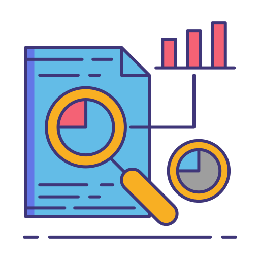

Analisi de dades
Tableau integra la Intel·ligència Artificial per facilitar l'anàlisi de dades de manera més eficient.
Hi han 5 IAs de les que hem aconseguit informació i que es pot consultar fent clic en "Més informació"
Tableau integra la Intel·ligència Artificial per facilitar l'anàlisi de dades de manera més eficient.
Tabnine és una IA dissenyada per millorar el desenvolupament.
IBM QRadar aplica la IA per millorar la seguretat cibernètica.
Darktrace és una plataforma revolucionària en el camp de la ciberseguretat.
Zendesk utilitza IA per automatitzar respostes a clients mitjançant chatbots, analitzar tiquets per prioritzar l'atenció i proporcionar solucions ràpides. alertes.